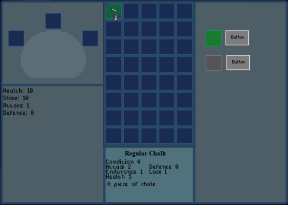

UI Design
Also check out my UI Design for Habit Party, a collaborative habit tracker.
Game UI for Inventory
Assignment
Create an inventory UI for a game. The developer had run into a block with this part of the project. She had a rough idea of what she thought she wanted. However, she didn’t like what she had pulled together. Her initial design used three columns. Column one was Character Development, the second Inventory, and the third Crafting. The crafting system still needed developed. However, the lack of the UI seemed to keep her from being able to move forward. We had worked together on other projects and were glad for the opportunity to work together again.
Full Process
Read about the creation process.

Solution
“It’s fantastic!”
The process included brainstorming the crafting system and integrating visual elements of the game into the inventory UI. The game palette was used for the colours for consistency. After several drafts, the UI was approved and was added to that iteration of the game.
Group PhysioLocator App
This tool is for temporarily tracking a group of people. Potential applications include GSAR, youth trips, and friends at events. This project is in the early design stage. Once viability is verified, user research will begin. Read more about the concept and early design ideas.